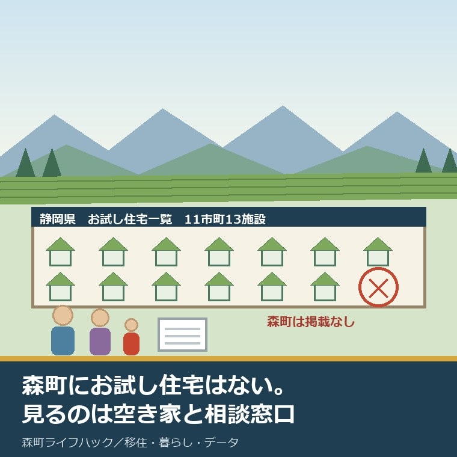
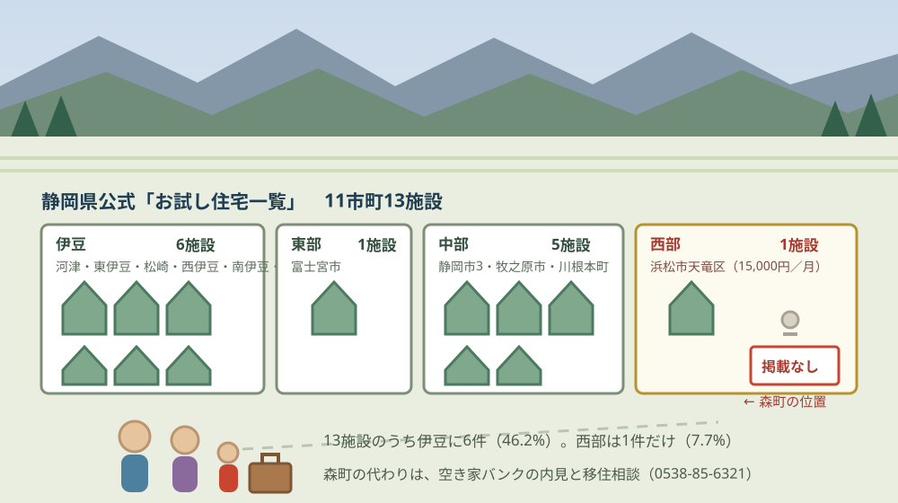
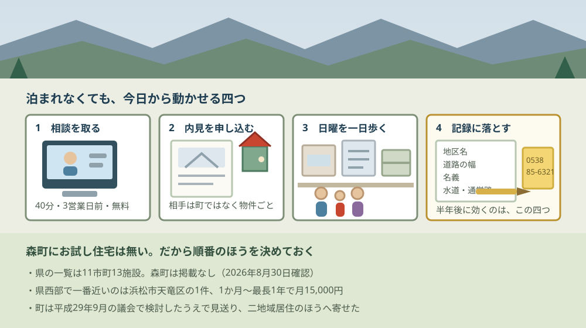

森町にお試し移住住宅はない｜県の一覧11市町13施設

この記事の要点
Q. 森町にも「お試し移住」で泊まれる住宅、ありますよね。
A. 2026年8月30日時点で、森町にお試し移住住宅はありません。静岡県公式の「お試し住宅一覧」は11市町13施設で、森町は非掲載です。町は平成29年9月の議会で検討したうえで見送っています。代わりに使えるのは、空き家・空き地バンクの内見と、定住推進課移住交流係（0538-85-6321）のオンライン移住相談です。
静岡県周智郡森町（遠州森町）への移住を考えている方から、いちばん多く聞かれる形の質問があります。「まず1週間くらい住んでみたいのですが、お試し住宅はありますか」というものです。
私は磐田市で小さな不動産業を営みながら、森町の空き家・農地・実家じまいのご相談を受けています。今日は2026年8月30日です。この日に確認できた範囲で、先に結論を書きます。
森町に、お試し移住のための住宅はありません。静岡県が公表している「お試し住宅一覧」を最後まで読んでも、森町の名前は出てきません。町の移住定住のページにも、それに当たる制度はありません。
ただ、この記事で本当に書きたいのはその先です。森町は、お試し移住を知らなかったのではなく、9年前に検討して見送っています。その記録が議会の会議録に残っていました。
公式情報から確定できること
2026年8月30日に、静岡県の移住・定住情報サイト、森町の公表ページ、森町議会の会議録から確認できたことを順に並べます。出典は記事の末尾にまとめています。
一つ目。静岡県公式の移住・定住情報サイト「ゆとりすと静岡」に、「お試し住宅一覧」というページがあります。趣旨は「移住希望の方が利用可能なお試し滞在用の住宅を紹介しています」と書かれています。
二つ目。この一覧に載っているのは、11市町の13施設です。静岡市だけが3施設あるため、市町の数と施設の数が一致しません。
三つ目。森町は載っていません。伊豆・東部・中部・西部の4区分すべてを見ましたが、周智郡森町という表記も、森町という表記も出てきませんでした。
四つ目。静岡県西部で載っているのは、浜松市天竜区の1施設だけです。「田舎暮らしお試し住宅」という名前で、佐久間町・春野町・熊の3地域にあります。
五つ目。掛川市・袋井市・磐田市・菊川市・島田市も、この一覧には載っていません。森町の周りの市は、県の一覧の上ではどこも同じ状態です。
六つ目。森町の移住定住の担当は、定住推進課移住交流係です。電話は0538-85-6321、ファックスは0538-85-4419です。
七つ目。森町の移住定住のページに並んでいるのは5項目です。移住定住相談、空き家・空き地バンク、森町の移住・定住情報について、森町移住促進パンフレット「TENCOMORI」について、移住定住参考情報。お試し住宅にあたる項目はありません。
八つ目。森町はオンライン移住相談を予約制で受けています。更新日は2022年1月6日。相談時間は午前9時から午後5時で、最終受付は午後4時。1回40分程度、希望日の3営業日前までに申し込み、使うツールはZOOM、料金は無料です。
九つ目。森町空き家・空き地バンクの更新日は2026年7月28日です。登録は無料で、「町は交渉や契約等は行いません」と明記されています。物件の公開ページは別に用意されています。地区ごとの価格差は森町の空き家バンク23件の記事にまとめました。
十番目。森町移住促進パンフレット「TENCOMORI」の更新日は2024年4月1日で、PDFの容量は10.1メガバイトです。ページ本文には数値の記載がありません。読む順序についてはTENCOMORIの読み方をまとめた記事に書きました。
十一番目。森町は令和7年度に「森町特定居住促進計画」を策定しています。二地域居住のページの更新日は2026年3月31日です。令和7年6月に国土交通省のモデル事業「二地域居住先導的プロジェクト」に採択され、令和8年度から二地域居住コーディネーターを配置すると書かれています。詳しくは森町特定居住促進計画の記事にまとめています。
十二番目。森町の人口は2026年8月1日現在で16,422人、世帯数は6,763世帯です。男8,213人、女8,209人。このページの更新日は2026年8月5日です。
十三番目。移住に関する森町の現金給付は、確認できた範囲で4つあります。住もうよ森町新婚さん応援金（上限30万円）、森町結婚新生活支援補助金（夫婦ともに29歳以下で上限60万円、39歳以下で上限30万円）、空き家等利活用推進支援費用補助金（残置物処分は上限10万円、改修工事は上限30万円）、移住就業支援補助金（100万円、単身は60万円）です。
十四番目。この4つは、いずれも「住み始めたあと」または「住むと決めたあと」に効く制度です。試している段階の人が使える枠は、この中にありません。
十五番目。平成29年9月の森町議会定例会の会議録に、「お試し移住」への答弁が残っています。会議録は森町の公表ページからPDFで読めます。詳しくは後ろの章で引用します。

この図で描きたかったのは、施設の数ではなく偏りです。13施設のうち伊豆に6件が集まっています。割合にすると46.2パーセントで、半分近くが伊豆半島にあります。
もう一つは西部の細さです。静岡県西部の掲載は1施設、13分の1で7.7パーセントです。森町から見て「近くにある選択肢」は、この一つしかありません。
静岡県のお試し住宅を、料金と滞在日数で並べる
静岡県の一覧に載っている施設のうち、料金と利用期間が読み取れるものを表にします。金額と日数は、いずれも2026年8月30日に一覧ページで確認した表示です。
| 施設名 | 市町 | 利用期間 | 料金 |
|---|---|---|---|
| 川根本町お試し住宅 | 川根本町 | 2泊3日以上7泊8日以内 | 無料 |
| 静岡市お試し住宅 | 静岡市 | 3泊4日〜2週間 | 1組あたり500円／日（事前相談が必要） |
| HAZ cottage | 牧之原市 | 3泊4日〜7泊8日 | 大人1泊2,500円（2人目以降1,500円）、小学生以下1泊500円 |
| 伊豆市お試し住宅 | 伊豆市 | 長期型30日〜180日／短期型7日〜15日 | 2,000円／日（水道光熱費等を含む） |
| 田舎暮らしお試し住宅 | 浜松市天竜区 | 1か月〜最長1年 | 15,000円／月 |
この表を、私は不動産屋の癖で1泊あたりに割り戻して見ています。浜松市天竜区の月15,000円は、30日で割ると1泊500円です。静岡市の1組500円／日と同じ水準で、しかも1年まで延ばせます。
牧之原市のHAZ cottageを、大人2人と小学生1人の家族で3泊した場合も計算しておきます。大人が2,500円と1,500円、小学生が500円で1泊4,500円、3泊で13,500円です。週末2回分の宿泊費に近い額になります。
川根本町の無料は、数字の上ではいちばん軽い。ただし2泊3日から7泊8日までで、上限は8日です。暮らしを試すというより、生活圏を歩いて確かめる長さだと私は読んでいます。
逆に、浜松市天竜区の「1か月から最長1年」は性格が違います。1年住めば、それは試住ではなく居住です。この一覧の中で、家財を運び込む前提の施設はここだけでした。
2017年の議会に、森町の答えが残っている
森町がお試し移住を「知らなかった」のではないことは、公表資料で確かめられます。平成29年（2017年）9月25日の森町議会定例会の会議録に、町長の答弁が載っています。
答弁はまず、制度そのものを否定していません。「『お試し移住』につきましては、移住希望者に短期間ではありますが、森町での生活を体験してもらう方法として、有効な一つのツールであると考えております」と述べられています。
そのうえで、当時の県内の実施状況が挙げられます。「県内では、静岡市、浜松市、牧之原市、河津町、東伊豆町、南伊豆町、西伊豆町の７市町で取り組みを行っていると聞いております」。7市町です。
見送りの理由は2つ書かれています。「他市町の状況を確認しますと、利用者が体験後、実際に移住へと結びついたケースは、余り多くないとのことでございました」と、「『お試し移住』は、利用する期間が短期間のため、移住体験でなく観光などの目的に使用されてしまう可能性もございます」です。
結論は保留の形です。「『お試し移住』については、さらなる研究が必要と考えますので、今後も、引き続き実施が可能かどうか研究してまいりたいと考えております」。この答弁から9年が経っています。
ここで数字を並べ直します。2017年の答弁では7市町、2026年8月30日時点の県の一覧では11市町です。9年で4市町増えました。この差は私が両方の資料を数えて出したもので、県が公表している増減の統計ではありません。
良い点：お試し住宅が無いことの、裏側にあるもの
お試し住宅が無い町だと書くと、それだけで欠点の話に聞こえます。ただ、公表資料を並べたうえで評価できる点が4つありました。順に書きます。
一つ目。やらない理由が公表資料に残っていることです。会議録は森町の公表ページからPDFで読めます。「予算がないので」でも「検討中です」でもなく、他市町の実績を確認したうえでの判断だと書いてある。この種の記録が残っている自治体は、探すと意外に手間がかかります。
二つ目。短期滞在の枠を作らないかわりに、住み始めたあとの現金給付を4つ揃えていることです。新婚さん応援金の上限30万円、結婚新生活支援補助金の上限60万円、空き家の残置物処分と改修で最大40万円、移住就業支援補助金の100万円。試す段階ではなく、決めた人に厚く配る形になっています。
三つ目。オンライン移住相談が、3営業日前の申込で無料・40分という具体的な形で用意されていることです。森町まで来なくても、1回40分の枠が取れる。遠方の子育て世帯にとっては、往復の時間を使わずに一次情報を取れる入口です。
四つ目。町が二地域居住のほうへ資源を寄せていることです。令和7年6月に国土交通省のモデル事業に採択され、令和8年度から二地域居住コーディネーターを配置する。短期の宿泊枠を作るより、住民票を移さない関わり方の受け皿を作るほうを選んだ形になっています。
注文したい点：移住を考える側から見て足りないところ
ここからは、森町の外から移住を考えている側の立場での注文を4つ書きます。町を批判したいのではなく、探した側の報告です。
一つ目。「お試し住宅はありません」と書いてあるページが、町の公表ページに無いことです。制度が無いこと自体は判断としてあり得ます。ただ、探す側は「見つけられなかったのか、無いのか」を確かめられません。私も今回、県の一覧・町の移住定住カテゴリ・議会の会議録の3つを突き合わせて、ようやく無いと判断しました。
二つ目。2017年の答弁が、その後どうなったのかが公表されていないことです。「引き続き研究してまいりたい」と述べられてから9年。研究の結果として見送りが確定したのか、いまも検討が続いているのか。県内の実施市町が7から11に増えているだけに、ここは知りたいところです。
三つ目。短期滞在の代わりになる場所が、移住のページから案内されていないことです。森町には宿泊できる場所が無いわけではありません。吉川沿いのキャンプとコテージについてはアクティ森周辺で泊まる準備の記事に整理しました。移住を考えて来る家族が、まずどこに泊まればよいのかが、移住のページからはたどれません。
四つ目。移住相談の件数や、移住された方の人数が公表されていないことです。オンライン移住相談が何件受け付けられているのか、そこから何世帯が転入したのか。数字が無いと、お試し住宅を作らない判断が正しかったのかを、外からは検証できません。この点は未確認のまま残します。

この図で一段目にオンライン相談を置いたのには理由があります。3営業日前までの申込が要るからです。森町へ行く日を決めてから相談を申し込むと、順番が逆になります。
三段目に「日曜の町を歩く」を置いたのは、宿泊枠が無い町で暮らしを試す方法が、そこに寄るからです。泊まれないなら、日帰りの一日をどう使うかが勝負になります。その一日の組み立て方は何もない日曜日を家族で過ごす記事に書きました。
対案・結論：今日、ご家族が確かめられること
お試し住宅が無いと分かった今日でも、進められることがあります。順番に5つ書きます。
一つ目。定住推進課移住交流係（0538-85-6321）に電話して、オンライン移住相談の空き枠を聞いてください。3営業日前までの申込で、1回40分、無料です。行く日を決める前に、聞きたいことを3つだけ紙に書いてから電話するほうが、40分は長く使えます。
二つ目。空き家・空き地バンクの物件公開ページを開いて、内見の申込先を確かめてください。更新日は2026年7月28日です。町は交渉や契約を行わないと明記されているので、内見の相手は物件ごとに違います。ここを先に確かめておくと、現地へ行く日の段取りが変わります。
三つ目。浜松市天竜区の田舎暮らしお試し住宅の条件を、比較のために控えてください。1か月から最長1年、月15,000円。問い合わせは浜松市の中山間地域振興を担当する課（053-922-0200）です。森町に住むかどうかを決める前に、県西部で唯一の試住枠がどういう条件かを知っておくと、判断の軸が1本増えます。
四つ目。森町に行く日を、日曜に取ってください。平日に役場を見るのと、日曜に生活圏を歩くのは別の作業です。泊まれない町を試すなら、店が開いている時間と、日曜に子どもを連れて行ける場所を、実際に歩いて確かめるほうが早い。
五つ目。宿泊が要る場合は、町内の宿泊施設を先に押さえてください。お試し住宅のような無料・低額の枠は無いので、宿泊費は自己負担になります。1泊分の費用を、県の一覧の500円／日や2,000円／日と並べておくと、他市町と比べるときの手触りが揃います。
ここまでやっても、移住するかどうかを今日決める必要はありません。今日の成果は、お試し住宅を探し続ける時間が要らなくなったことです。無いと分かった分の時間を、相談枠と内見に回せます。
家族に残す記録
調べた内容は、その日のうちに1枚にまとめてください。移住の検討は年単位になることが多く、半年空けると同じことをもう一度調べ直すことになります。
書き出す項目は6つです。①オンライン移住相談を申し込んだ日と担当係 ②空き家バンクで見た物件の地区名と価格 ③内見の申込先（町ではなく物件ごとの相手） ④日曜に歩いた場所と所要時間 ⑤浜松市天竜区のお試し住宅の条件 ⑥森町の現金給付4つのうち、自分の家族が対象になりそうなもの。
加えて、確認できなかったことも同じ紙に残します。「森町のお試し移住は2017年の答弁以降の経過が未公表」「移住相談の件数・移住者数は未公表」の2つです。次に町へ問い合わせるときの質問が、この欄からそのまま作れます。
もう一つ、不動産の側から一行足してください。候補にした物件の、道路の幅と名義と接道の状況。お試しで泊まれるかどうかより、この3つのほうが半年後に効きます。買っても借りても、ここが詰まると話が止まるからです。
大石の視点
ここからは公表資料の話ではなく、私がどう見ているかを書きます。森町の移住相談に立ち会った現場の一場面は手元の記録に無いので、体験談としてではなく意見として明示します。
私は、森町にお試し住宅が無いことを、この町の弱点だとは考えていません。理由は2つあります。
1つ目は、費用の性格です。お試し住宅は、建物を1棟押さえて、掃除と鍵と光熱費を毎月払い続ける形の事業です。1年で何組が泊まるかに関わらず、維持費は定額で出ていきます。人口16,422人の町で、この定額を誰が回すのかを考えると、私は簡単に「作るべきだ」とは言えません。
2つ目は、不動産屋としての実感です。1週間泊まった家と、契約して住む家は、たいてい別の家です。試住で分かるのは町の空気で、住む家の良し悪しではありません。むしろ空き家バンクの物件を2件見て、道路と名義と水回りを確かめたほうが、判断に効く材料は増えます。
だから私はこう言い切ります。森町で暮らしを試す最短の道は、泊まることではなく、内見を申し込むことです。内見なら、その家に住む前提で見られます。町の空気は、日曜に一日歩けば足ります。
一方で、引っかかっていることもあります。2017年に7市町だった県内の実施が、2026年には11市町になっている点です。4市町増えている。実績が「余り多くない」と言われた事業を、9年かけて増やした自治体が県内にある、ということでもあります。
ここは私にも分かりません。増えた4市町がどんな結果を出しているのかが公表されていないので、判断する材料がないのです。推測として書くなら、私は「移住の直接の入口としてではなく、関係人口をつくる入口として作られている」と読んでいます。ただし裏付けはありません。
もう一つ、私が森町の判断で筋が通っていると思う点を書いておきます。町は短期の宿泊枠ではなく、二地域居住のほうへ寄せました。令和8年度から二地域居住コーディネーターを配置する。1週間泊まってもらうより、住民票を動かさないまま何年も関わってもらう形を選んだ、と読めます。
これが回るかどうかは、コーディネーターが1人で何件の相談を受けられるかにかかっています。制度が立派でも、受ける人が回せなければ動きません。令和8年度の配置がどういう体制になるのかは、私も追いかけるつもりです。
最後に、移住を考えているご家族へ。私は「まだ決めない」という状態を、悪いことだとは思っていません。ただ、お試し住宅を待って1年動かないより、相談枠を1つ取って内見を2件見るほうが、決めるための材料は確実に増えます。
まとめ
この記事で確認した事実を、最後に並べ直します。すべて2026年8月30日時点で公表されている内容です。
- 静岡県公式サイト「ゆとりすと静岡」の「お試し住宅一覧」は11市町13施設。森町は掲載されていない
- 13施設のうち伊豆に6件（46.2パーセント）。静岡県西部は浜松市天竜区の1件のみ（7.7パーセント）
- 掛川市・袋井市・磐田市・菊川市・島田市も、この一覧には掲載がない
- 浜松市天竜区「田舎暮らしお試し住宅」は佐久間町・春野町・熊の3地域。1か月〜最長1年、月15,000円
- 川根本町は無料（2泊3日〜7泊8日）、静岡市は1組500円／日（3泊4日〜2週間・事前相談が必要）、伊豆市は2,000円／日、牧之原市HAZ cottageは大人1泊2,500円（2人目以降1,500円）・小学生以下500円
- 森町の移住定住のページに、お試し住宅にあたる項目はない（並ぶのは相談・空き家バンク・移住定住情報・TENCOMORI・参考情報の5項目）
- 森町の担当は定住推進課移住交流係（0538-85-6321）
- オンライン移住相談は予約制、午前9時〜午後5時（最終受付16時）、1回40分程度、3営業日前までに申込、ZOOM、無料（更新日2022年1月6日）
- 森町空き家・空き地バンクは登録無料、「町は交渉や契約等は行いません」と明記（更新日2026年7月28日）
- 森町移住促進パンフレット「TENCOMORI」はPDF 10.1メガバイト（更新日2024年4月1日）
- 平成29年9月25日の森町議会定例会で、お試し移住は「有効な一つのツール」としつつ、他市町で移住に結びついた例が「余り多くない」こと、観光目的に使われる可能性があることを理由に、「引き続き実施が可能かどうか研究してまいりたい」と答弁されている
- 同答弁の時点で県内の実施は7市町。2026年8月30日時点の県の一覧は11市町で、9年で4市町増えている（執筆者が両資料を数えた差）
- 森町は令和7年度に「森町特定居住促進計画」を策定。令和7年6月に国土交通省「二地域居住先導的プロジェクト」に採択され、令和8年度から二地域居住コーディネーターを配置（更新日2026年3月31日）
- 森町の人口は16,422人、世帯数6,763世帯（2026年8月1日現在・更新日2026年8月5日）
- 移住関連の現金給付は住もうよ森町新婚さん応援金（上限30万円）、森町結婚新生活支援補助金（上限60万円／30万円）、空き家等利活用推進支援費用補助金（残置物処分10万円・改修30万円）、移住就業支援補助金（100万円・単身60万円）
- 森町の移住相談件数・移住者数は公表を確認できなかった
よくある質問
Q1. 森町にお試し移住の住宅はありますか。
A1. 2026年8月30日時点で、静岡県公式サイトのお試し住宅一覧（11市町13施設）に森町の掲載はなく、森町の移住定住のページにも該当する制度はありません。町は平成29年9月の森町議会定例会で「お試し移住」を検討したうえで、実施を見送っています。短期滞在の代わりになるのは、空き家・空き地バンクの内見と、オンライン移住相談です。
Q2. 森町から一番近いお試し住宅はどこですか。
A2. 静岡県公式のお試し住宅一覧で静岡県西部に掲載されているのは、浜松市天竜区の「田舎暮らしお試し住宅」1件だけです。佐久間町・春野町・熊の3地域にあり、料金は月15,000円、利用期間は1か月から最長1年です。問い合わせは浜松市の中山間地域振興を担当する課（053-922-0200）です。
Q3. 森町の移住相談は、どこに申し込みますか。
A3. 森町の担当は定住推進課移住交流係（電話0538-85-6321）です。オンライン移住相談は予約制で、相談時間は午前9時から午後5時（最終受付は午後4時）、1回40分程度、希望日の3営業日前までに申し込みます。使うツールはZOOMで、料金は無料です。空き家・空き地バンクの担当も同じ係です。
最後に一つだけ。ここに書いた施設数、料金、利用期間、電話番号、更新日は、いずれも静岡県「ゆとりすと静岡」のお試し住宅一覧、森町の公表ページ、森町議会定例会の会議録に記載されている値を、2026年8月30日に確認して書き写したものです。13施設の地域別の割合と、県内実施が7市町から11市町に増えたという差は、私が公表資料を数えて出した概算であり、公表されている統計ではありません。森町にお試し住宅が無いことは、県の一覧に掲載が無いことと、町の移住定住カテゴリに該当ページが無いことから判断したもので、「無い」と書かれた公式の記載を確認したわけではありません。2017年の答弁以降の検討経過、移住相談の件数、移住者数は確認できていません。申し込む前に、必ず森町の公表ページと定住推進課移住交流係（0538-85-6321）でご確認ください。
参考にした公式情報
- お試し住宅一覧／【静岡県公式】移住・定住情報サイト ゆとりすと静岡（「移住希望の方が利用可能なお試し滞在用の住宅を紹介しています。」と記載されていること、掲載が11市町13施設で伊豆に6件・東部に1件・中部に5件・西部に1件であること、周智郡森町の掲載が無いこと、浜松市天竜区「田舎暮らしお試し住宅」が佐久間町・春野町・熊の3地域にあり利用期間1か月〜最長1年・料金15,000円／月であること、川根本町お試し住宅が2泊3日以上7泊8日以内・無料であること、静岡市お試し住宅が3泊4日〜2週間・1組あたり500円／日で事前相談が必要であること、伊豆市お試し住宅が長期型30日〜180日・短期型7日〜15日で2,000円／日（水道光熱費等を含む）であること、牧之原市HAZ cottageが3泊4日〜7泊8日で大人1泊2,500円（2人目以降1,500円）・小学生以下1泊500円であることを2026年8月30日に確認）
- 定住推進課 移住交流係／静岡県森町（担当が定住推進課移住交流係であること、電話が0538-85-6321、ファックスが0538-85-4419であること、移住定住の掲載項目が移住定住相談・空き家空き地バンク・森町の移住定住情報について・森町移住促進パンフレット「TENCOMORI」について・移住定住参考情報の5項目で、お試し住宅にあたる項目が無いことを2026年8月30日に確認）
- 森町空き家・空き地バンク／静岡県森町（「更新日：2026年07月28日」と表示されていること、「空き家・空き地バンクは町内にある空き家・空き地の情報を登録・公開することによって物件の有効活用を図り、森町への移住・定住や地域の活性化を促進するための制度です。」と記載されていること、登録が無料であること、「(注意1)町は交渉や契約等は行いません。」と明記されていることを2026年8月30日に確認）
- 【予約随時受付】オンライン移住相談／静岡県森町（「更新日：2022年01月06日」と表示されていること、相談時間が午前9時から午後5時で最終受付が午後4時までであること、1回40分程度であること、希望日の3営業日前までに申し込むこと、ツールがZOOMであること、料金が無料であることを2026年8月30日に確認）
- 二地域居住の促進／静岡県森町（「更新日：2026年03月31日」と表示されていること、「森町では令和7年度、二地域居住（多拠点居住）を戦略的に進めるための指針となる『森町特定居住促進計画』を策定しました。」と記載されていること、令和7年6月に国土交通省のモデル事業「二地域居住先導的プロジェクト」に採択されたこと、令和8年度から二地域居住コーディネーターを配置することを2026年8月30日に確認）
- 森町移住促進パンフレット「TENCOMORI」について／静岡県森町（「更新日：2024年04月01日」と表示されていること、パンフレットがPDF 10.1メガバイトで公開されていること、ページ本文に数値の記載が無いことを2026年8月30日に確認）
- 住もうよ森町新婚さん応援金／静岡県森町（「更新日：2026年04月01日」と表示されていること、上限が30万円であること、婚姻日から1年以内であること、婚姻日の年齢が双方またはいずれか一方が39歳以下であること、交付申請日から引き続き1年以上森町に居住することが要件に含まれることを2026年8月30日に確認）
- 森町結婚新生活支援補助金／静岡県森町（「更新日：2026年06月11日」と表示されていること、夫婦ともに29歳以下で上限60万円、夫婦ともに39歳以下で上限30万円であること、夫婦の所得合計が500万円未満であることが要件に含まれることを2026年8月30日に確認）
- 空き家等利活用推進支援費用補助金／静岡県森町（「更新日：2024年12月06日」と表示されていること、残置物処分が上限10万円、改修工事が上限30万円であること、空き家バンクに2年以上継続して登録していることが要件に含まれることを2026年8月30日に確認）
- 平成29年9月森町議会定例会 会議録（平成29年9月25日）／静岡県森町（「『お試し移住』につきましては、移住希望者に短期間ではありますが、森町での生活を体験してもらう方法として、有効な一つのツールであると考えております。」「県内では、静岡市、浜松市、牧之原市、河津町、東伊豆町、南伊豆町、西伊豆町の７市町で取り組みを行っていると聞いております。」「他市町の状況を確認しますと、利用者が体験後、実際に移住へと結びついたケースは、余り多くないとのことでございました。」「『お試し移住』は、利用する期間が短期間のため、移住体験でなく観光などの目的に使用されてしまう可能性もございます。」「『お試し移住』については、さらなる研究が必要と考えますので、今後も、引き続き実施が可能かどうか研究してまいりたいと考えております。」と記載されていることを2026年8月30日に確認）
- 森町の月別人口／静岡県森町（「更新日：2026年08月05日」と表示されていること、2026年8月1日現在の総人口が16,422人（男8,213人・女8,209人）、世帯数が6,763世帯と記載されていることを2026年8月30日に確認）

最終確認日：2026-08-30 ／ 本記事は公表情報と執筆者の見解を分けて記載しています。13施設の地域別の割合と、静岡県内の実施が7市町から11市町へ増えたという差は、いずれも執筆者が公表資料を数えて出した概算であり、公表されている統計ではありません。森町にお試し移住住宅が無いことは、静岡県公式のお試し住宅一覧に掲載が無いことと、森町の移住定住カテゴリに該当ページが無いことから判断したものであり、「無い」と明記された公式の記載を確認したわけではありません。平成29年9月の答弁以降の検討経過、森町の移住相談件数、移住者数はいずれも確認できていません。制度・料金・受付方法は変更されることがあります。動く前に、必ず森町の公表ページと定住推進課移住交流係（0538-85-6321）でご確認ください。